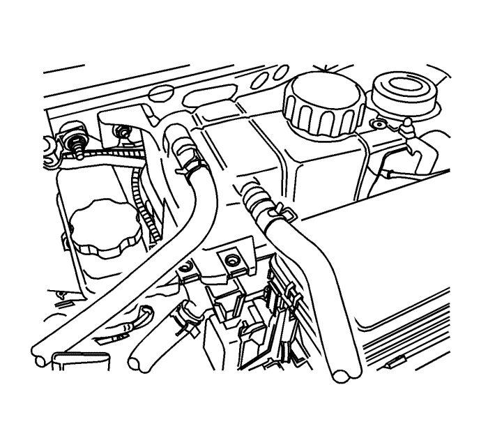
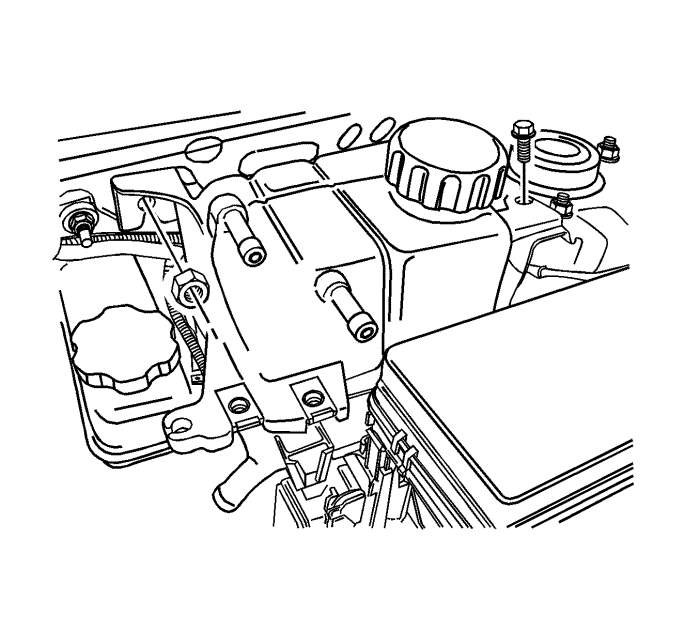

Sustitución del vaso de expansión del radiador — Motores de gasolina
Procedimiento de desmontaje

Advertencia : Para evitar quemaduras, no abra la tapa del radiador ni la del depósito de expansión mientras que el motor esté caliente. El sistema de refrigeración liberará líquido extremadamente caliente y vapor bajo presión si se abren la tapa del radiador o del depósito de expansión mientras que el motor y el radiador todavía están calientes.
- Extraiga refrigerante del motor hasta que su nivel esté por debajo del vaso de compensación.
- Desmonte el depósito del líquido de la dirección asistida Consultar Sustitución del depósito del líquido de la dirección asistida .
- Afloje la abrazadera del manguito de retorno y desconecte dicho manguito de la parte superior del vaso de compensación.
- Afloje la abrazadera del manguito del cuerpo del acelerador y desconecte dicho manguito de la parte superior del vaso de compensación.
- Afloje la abrazadera del manguito de alimentación y desconecte dicho manguito de la parte inferior del vaso de compensación.

- Quite el tornillo y la tuerca de fijación de la cámara de compensación.
- Retire el depósito de expansión.
- Limpie el interior y el exterior del vaso de compensación y el tapón del mismo con agua y jabón.
- Aclare a fondo el vaso de compensación junto con su tapón.
Procedimiento de montaje
- Monte el depósito de expansión.
Precaución: Consulte Precaución con las fijaciones en la sección Prólogo
- Sujete la cámara de compensación con el tornillo y la tuerca de fijación.
Apretar
Apriete el tornillo y la tuerca de fijación del depósito de compensación hasta 8 N·m (71 lb in).
- Conecte el manguito de retorno y el manguito del cuerpo del acelerador a la parte superior del vaso de compensación.
- Conecte el manguito de alimentación a la parte inferior del vaso de compensación.
- Sujete el manguito de retorno, el manguito del cuerpo del acelerador y el manguito de alimentación al vaso de compensación con las abrazaderas de los manguitos.
- Llene el vaso de compensación de refrigerante hasta la arista central o hasta la marca MAX.
| © Copyright Chevrolet Europe. All rights reserved |